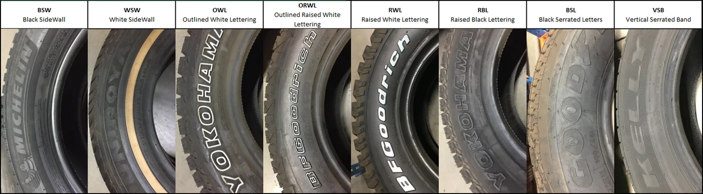
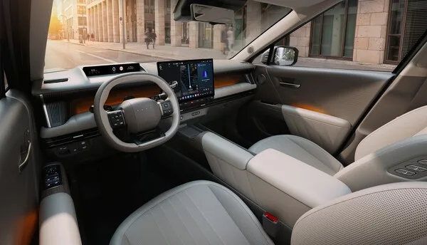

▲ 인수증에 서명하는 순간 다툴 수 있는 범위가 줄어든다 ⓒ Wikimedia Commons
신차를 받는 날은 들뜹니다.
그래서 대충 둘러보고 서명합니다.
그런데 차는 공장에서 곧장 오지 않습니다. 선적, 운송, 야적장 보관, 탁송을 거칩니다. 그 사이에 생긴 일은 아무도 먼저 말해주지 않습니다.
1. 언제 어디서 받을지가 절반입니다
📍 밤에 받으면 아무것도 못 봅니다
도장 결함, 미세한 흠집, 패널 색 차이는 빛의 각도에 따라 보였다 안 보였다 합니다. 전시장 실내조명은 균일해서 오히려 결함을 감춥니다.
가능하면 낮 시간에, 실외로 차를 빼서 보는 것이 좋습니다. 비 오는 날도 불리합니다. 물방울이 표면을 가립니다.
시간도 확보해야 합니다. 인수 절차와 기능 설명에만 시간이 다 가면 정작 차를 볼 시간이 없습니다. 미리 "차를 좀 보겠다"고 말해두는 편이 낫습니다.
2. 서류 — 차대번호부터
| 항목 | 확인 내용 |
|---|---|
| 차대번호 | 계약서·등록증·차량 실물이 모두 일치하는지 |
| 사양 | 트림·색상·선택 옵션이 계약과 같은지 |
| 제작연월 | 생산 시점 — 연식 변경 직전 물량인지 |
| 주행거리 | 통상 수십 km 이내 |
📍 주행거리가 많다면 이유를 물어야 합니다
공장에서 나와 탁송되는 과정에서 수십 km는 정상입니다. 그런데 수백 km가 찍혀 있다면 이야기가 다릅니다.
시승차로 쓰였거나, 다른 지점에서 자력 회송된 경우일 수 있습니다. 문제가 되는 것은 사실 자체보다 고지 없이 넘어가는 것입니다.
3. 외관 — 단차와 도장
| 항목 | 보는 법 |
|---|---|
| 패널 단차 | 본넷·도어·트렁크 틈이 좌우 대칭인지 |
| 도장 흠집 | 비스듬한 각도에서 빛을 반사시켜 확인 |
| 도장 색 차이 | 패널마다 미묘하게 다른 색이 없는지 |
| 하부·휠하우스 | 운송 중 돌 튄 자국이나 긁힘 |
| 유리 각인 | 모든 유리의 제조사·제조주차가 비슷한지 |
📍 유리 제조주차를 왜 보나
모든 유리는 비슷한 시기에 만들어져 함께 조립됩니다. 그런데 한 장만 제조 시기가 눈에 띄게 다르면, 그 유리는 나중에 교체됐을 가능성이 있습니다.
운송 중 파손으로 교체했을 수 있는데, 그 자체가 문제라기보다 고지 여부가 문제입니다. 타이어 제조주차도 같은 이유로 봅니다.

▲ 타이어 옆면 네 자리 숫자로 제조주차를 확인할 수 있다 ⓒ Wikimedia Commons
4. 실내와 전장품
✅ 실내에서 확인할 것
· 시트·내장재 오염과 눌린 자국 — 보관 중 생기기 쉽습니다
· 비닐·보호필름이 제거된 부위와 남은 부위 확인
· 모든 창문 상하 작동 · 선루프 개폐
· 공조 — 냉방과 난방을 둘 다 켜봅니다
· 인포테인먼트 부팅·화면 이상·스피커 좌우 출력
· 모든 등화류 — 전조등·미등·방향지시등·실내등
· 냄새 — 곰팡이나 물비린내가 나면 반드시 물어봐야 합니다
마지막 항목이 중요합니다. 야적장에 오래 있던 차는 습기 문제가 생길 수 있습니다. 새 차 냄새와 퀴퀴한 냄새는 다릅니다.
5. 문제를 발견했다면
가장 중요한 부분입니다. 발견보다 기록이 중요합니다.
| 순서 | 행동 |
|---|---|
| 1 | 사진·영상 촬영 — 전경과 근접을 함께 |
| 2 | 인수증에 문구로 기재 — 구두 약속은 남지 않습니다 |
| 3 | 담당자 확인 서명 또는 문자·메일로 내용 확보 |
| 4 | 처리 방식(수리·교환·보상)과 일정을 문서로 |
📍 "일단 받고 나중에 말씀드릴게요"가 가장 위험합니다
인수증에 서명하면 인도 시점에 이상이 없었다는 기록이 남습니다. 그 뒤에 제기하면 인도 후에 생긴 것과 구분하기 어려워집니다.
번거롭더라도 그 자리에서 기재하는 것이 유일한 방법입니다. 담당자와의 신뢰 문제가 아니라 절차의 문제입니다.

▲ 구두 약속은 남지 않는다. 인수증에 기재해야 한다 ⓒ Wikimedia Commons
6. 인수 후 첫 주에 할 것
✅ 며칠 타보며 확인할 것
· 직진 쏠림 — 평탄한 길에서 손을 살짝 놓아 확인 (안전한 곳에서)
· 이음(異音) — 저속 요철 통과 시 잡소리
· 브레이크 소음과 편제동 느낌
· 경고등 — 시동 시 잠깐 켜졌다 꺼지는 것은 정상, 계속 켜져 있으면 이상
· 공조 냄새와 물기 — 에어컨 사용 후 확인
초기 결함은 보증으로 처리됩니다. 다만 빨리 발견할수록 인도 시점의 문제로 인정받기 쉽습니다. 첫 주에 집중해서 타보는 편이 좋습니다.

▲ 초기 결함은 빨리 발견할수록 인도 시점 문제로 인정받기 쉽다 ⓒ 현대차

▲ 도장 결함은 빛의 각도에 따라 보였다 안 보였다 한다 ⓒ Wikimedia Commons
7. 정리
신차는 공장에서 곧장 오지 않습니다. 운송과 보관 사이에 생긴 일은 인수증에 서명한 뒤 다투기 어려워집니다.
낮에, 밝은 실외에서 보는 것이 절반입니다. 차대번호와 계약 사양, 주행거리, 패널 단차와 도장, 유리·타이어 제조주차, 전장품 작동, 실내 냄새를 확인합니다.
문제를 찾았다면 반드시 인수증에 기재하고 사진을 남깁니다. "나중에 말씀드릴게요"가 가장 위험합니다. 담당자를 못 믿어서가 아니라 기록이 남지 않기 때문입니다.